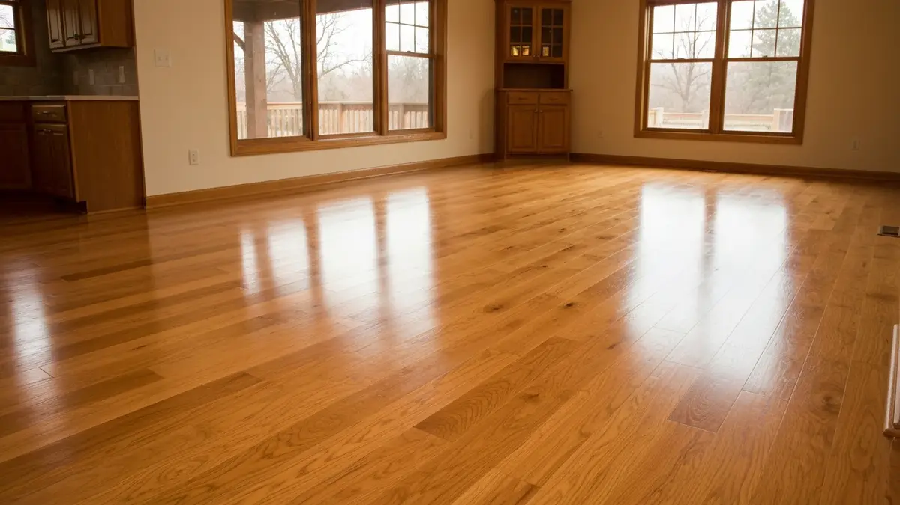
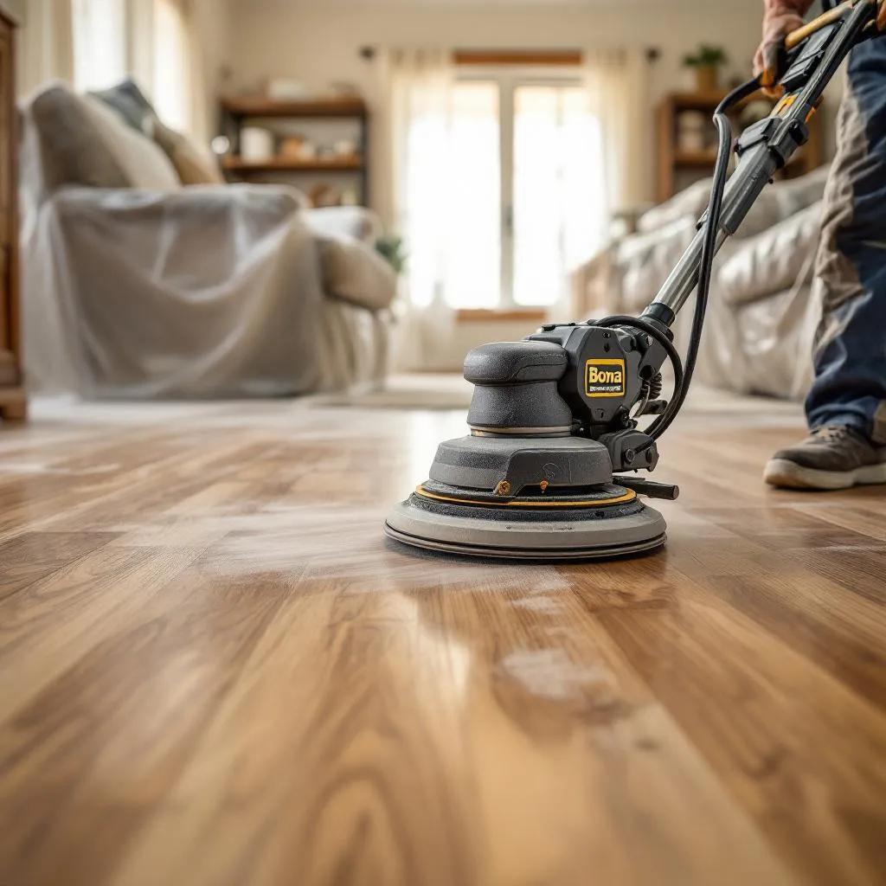

Hardwood Floor Refinishing in Bennington
Hardwood Floor Installation And Refinishing in Bennington
Bennington's explosive growth as a master-planned community northwest of Omaha demands flooring that matches its upscale vision. With new construction dominating the landscape, many homeowners seek to elevate beyond standard builder-grade finishes, making premium hardwood floor installation a top priority. The area's increasingly active, family-focused lifestyle benefits immensely from hardwood's durability and easy maintenance, perfectly suited for busy homes near Bennington Lake or bustling Main Street. Furthermore, Nebraska's distinct seasonal shifts, from humid summers to dry winters, necessitate high-quality, professionally installed hardwood that can withstand environmental fluctuations without compromising beauty or integrity, ensuring lasting value in these rapidly appreciating properties.

Why Bennington Residents Choose Elkhorn Hardwood
As a local Elkhorn business, Elkhorn Hardwood possesses an intimate understanding of the unique demands within the Bennington market. Our proximity means we're frequently on-site, familiar with the specific soil conditions affecting new foundations and the humidity levels common in this part of Northwest Omaha. We appreciate Bennington’s rapid expansion and homeowners' desire for high-end finishes, enabling us to provide tailored recommendations that align with local architectural styles and the drive for premium quality over builder-standard options. Our reputation is built on serving neighbors right here in the metro area.
Our service advantages are specifically geared towards Bennington’s dynamic environment. For new construction, we specialize in seamless integration with existing home plans, often upgrading or replacing builder-grade carpet and LVT with stunning hardwood that immediately boosts property value and appeal. For established homes or remodels, our refinishing techniques breathe new life into worn floors, protecting them against the high traffic of active families and Nebraska’s climate shifts. We prioritize dust containment, a crucial factor for homes under construction nearby or those with young children, ensuring a cleaner project from start to finish.
Our Hardwood Floor Installation And Refinishing Services in Bennington
- New Hardwood Installation: Perfect for Bennington's new construction boom, we install premium hardwood that transforms builder-grade interiors into custom, high-end living spaces, often outfitting entire homes in developments like Anchor Pointe or Bennington Lake.
- Hardwood Refinishing & Restoration: For existing Bennington homes, our refinishing services restore the beauty and durability of worn floors, protecting them from heavy family traffic and Nebraska's varied climate, enhancing their longevity and aesthetic appeal.
- Custom Hardwood Staining: Elevate your Bennington home with bespoke staining options. We help homeowners achieve the perfect finish to complement their unique decor, from light, airy tones popular in modern farmhouse styles to rich, deep hues for classic elegance, suitable for any design palette.
- Hardwood Repair & Maintenance: From addressing minor scratches and dents typical of active Bennington households to repairing water damage near busy entryways, our experts ensure your hardwood floors remain impeccable, preserving their beauty and structural integrity for years to come.
Serving Bennington and Surrounding Areas
Bennington, a rapidly expanding jewel in Northwest Omaha, stretches westward from the Elkhorn River, primarily along Highway 36 and Bennington Road. Our service area meticulously covers popular master-planned communities like Anchor Pointe, Heritage at Bennington, and the newer developments surrounding Bennington Lake. We regularly work on properties just off West Maple Road and along the charming Main Street district. Whether your home is nestled north towards Waterloo or south near the emerging commercial hubs, Elkhorn Hardwood is deeply familiar with every corner of Bennington, understanding its unique geographical layout and ongoing growth from residential expansions to new business fronts.
Frequently Asked Questions About Hardwood Floor Installation And Refinishing in Bennington

How much does hardwood floor installation and refinishing cost in Bennington?
Hardwood costs in Bennington reflect its premium housing market. For typical 2,000-3,000 sq ft new builds or remodels, installation ranges widely based on wood type (oak, maple, etc.) and complexity, often between $6-$15+ per square foot. Refinishing usually falls between $3-$5 per square foot. These figures are higher than average due to demand for quality in Bennington’s upscale developments and the larger home sizes.
How long does hardwood floor installation and refinishing take for a typical Bennington home?
For a typical Bennington home, often between 2,500 and 3,500 square feet, new hardwood installation can take 5-7 days, depending on scope and prep work. Refinishing existing floors in a similar-sized home generally requires 3-5 days. These timelines account for Bennington’s commonly open floor plans and the professional-grade finishes residents expect from their new builds or renovations.
Do you serve all of Bennington?
Absolutely, Elkhorn Hardwood proudly serves all neighborhoods within Bennington. This includes established areas closer to Main Street, the burgeoning developments around Bennington Lake, and newer communities such as Anchor Pointe, Heritage at Bennington, and the expansive growth along Highway 36. From the heart of town to the farthest new construction sites, we cover the entire Bennington area.
Can Elkhorn Hardwood upgrade existing builder-grade flooring in my new Bennington home?
Yes, this is a very common request in Bennington's new construction market. Many homeowners choose to replace builder-grade carpet, LVT, or even lower-quality laminate with premium hardwood from day one. We specialize in seamlessly removing existing flooring and installing high-quality hardwood that truly elevates your Bennington home, ensuring a superior finish that matches the community's upscale aesthetic and investment value.
Ready to schedule your hardwood floor installation and refinishing service in Bennington? Call us today or use the contact form above — we serve Bennington and all surrounding areas of Omaha/Elkhorn, NE. Most Bennington jobs are scheduled within 48-72 hours.